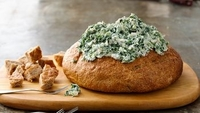
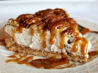
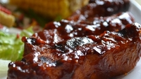

Breaded fresh mozzarella which is fried to perfection and served with our home made marinara sauce
Enjoy our spinach dip which contains a creamy four cheese blend and fresh organic spinach, served with warm pita bread.
We deep fry our large portabella mushrooms to golden perfection, served with your choice of marinara, or our signature house blend
Enjoy our chocolate cake, which is created with three different kinds of chocolate and then drizzled with our warm chocolate sauce
Our head chef prepares the creme brulee fresh daily, your dessert will be warmed to perfection at our table
Organic pecans are topped over a delicous and warm pie which contains our house made caramel
Enjoy our made fresh daily key lime pie, which is topped over our home made graham cracker crust.
Hand breaded, then deep fried all natural chicken breast which is seasoned with our signature house blend. Served with your choice of fries or cole slaw
1/2 pound of Kobe Beef, placed under layers of cheddar cheese. Topped with apple wood smoked bacon and placed on a golden buttered and toasted bun. Served with fries or side salad.
Saddle up with our burger that contains 1/2 lb of angus beef along with our home made BBQ sauce, deep fried crispy onion rings, your choice of cheese, and your choice of our signature deep fried mushrooms or deep fried pickles. Served with fries or side salad.
Our tasty pork ribs are slow cooked for 32 hours and then lathered in your choice of BBQ sauce, consisting of Carolina Gold, Hickory BBQ, or Honey BBQ. Served with fries or side salad.
Try our healthy option of 8 oz of antibiotic free chicken. Served with side salad and choice of rice, or sweet potato.
A customized salad with your choice of a base of kale, lettuce, or spinach. A choice of meat of grilled chicken or steak. Along with a choice of croutons or pita bread as a topping. Includes our house blend of local fresh produce.